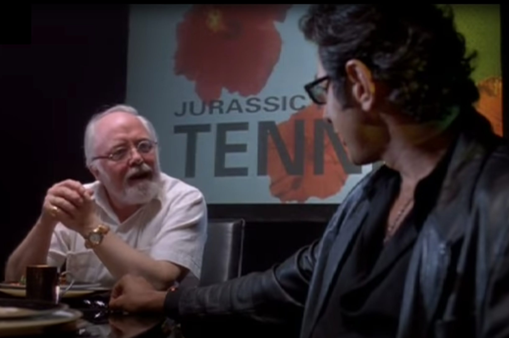
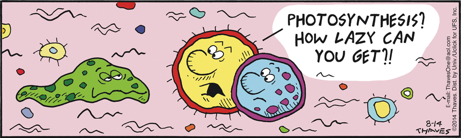
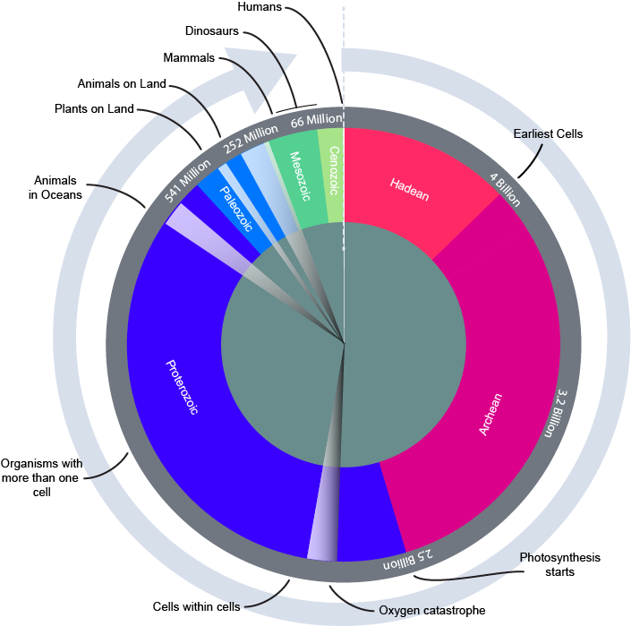

I’m Jonathan Burbaum, and this is Healing Earth with Technology: a weekly, Science-based, subscriber-supported serial. In this serial, I offer a peek behind the headlines of science, focusing (at least in the beginning) on climate change/global warming/decarbonization. I welcome comments, contributions, and discussions, particularly those that follow
Deming’s caveat
, “In God we trust. All others, bring data.” The subliminal objective is to open the scientific process to a broader audience so that readers can discover their own truth, not based on innuendo or
ad hominem
attributions but instead based on hard data and critical thought.
You can read Healing for free, and you can reach me directly by replying to this email.
If someone forwarded you this email, they’re asking you to sign up. You can do that by clicking
here
.
If you
really
want to help spread the word, then pay for the otherwise free subscription. I use any fees to increase readership through Facebook and LinkedIn ads.
Today’s read: 10 minutes.

“You egomaniacal
idiot
, Malcolm said in fury. “Do you have any idea what you are talking about? You think you can destroy the planet? My what intoxicating power you must have.” Malcolm sank back on the bed. “You can't destroy this planet. You can't even come close.”
“Most people believe,” Hammond said stiffly, “that the planet is in jeopardy.”
“Well, it's not,” Malcolm said.
“All the experts agree that our planet is in trouble.”
Malcolm sighed. “Let me tell you about our planet,” he said. “Our planet is four and a half billion years old. There has been life on this planet for nearly that long. Three point eight billion years. The first bacteria. And, later, the first multicellular animals, then the first complex creatures, in the sea, on the land. Then the great sweeping ages of animals—the amphibians, the dinosaurs, the mammals, each lasting millions upon millions of years. Great dynasties of creatures arising, flourishing, dying away. All this happening against a background of continuous and violent upheaval, mountain ranges thrust up and eroded away, cometary impacts, volcanic eruptions, oceans rising and falling, whole continents moving. …Endless, constant and violent change.…Even today, the greatest geographical feature on the planet comes from two great continents colliding, buckling to make the Himalayan mountain range over millions of years. The planet has survived everything, in its time. It will certainly survive us.”
Hammond frowned. “Just because it lasted a long time,” he said, “doesn't mean it is permanent. If there was a radiation accident ... “
“Suppose there was,” Malcolm said. “Let's say we had a bad one, and all the plants and animals died, and the earth was clicking hot for a hundred thousand years. Life would survive somewhere—under the soil, or perhaps frozen in Arctic ice. And after all those years, when the planet was no longer inhospitable, life would again spread over the planet. The evolutionary process would begin again. It might take a few billion years for life to regain its present variety. And of course it would be very different from what it is now. But the earth would survive our folly. Life would survive our folly. Only we,” Malcolm said, “think it wouldn't.”
Hammond said, “Well, if the ozone layer gets thinner—”
“There will be more ultraviolet radiation reaching the surface. So what?”
“Well. It’ll cause skin cancer.”
Malcolm shook his head. “Ultraviolet radiation is good for life. It’s powerful energy. It promotes mutation, change. Many forms of life will thrive with more UV radiation.”
“And many others will die out,” Hammond said.
Malcolm sighed. “You think this is the first time such a thing has happened? Don’t you know about oxygen?”
“I know it’s necessary for life.”
“It is
now,
” Malcolm said. “But oxygen is actually a metabolic poison. It’s a corrosive gas, like fluorine, which is used to etch glass. And when oxygen was first produced as a waste product by certain plant cells—say, around three billion years ago—it created a crisis for all other life on our planet. Those plant cells were polluting the environment with a deadly poison. They were exhaling a lethal gas, and building up its concentration. A planet like Venus has less than one percent oxygen. On earth, the concentration of oxygen was going up rapidly-five, ten, eventually twenty-one percent! Earth had an atmosphere of pure poison! Incompatible with life!”
Hammond looked irritated. “So what is your point? That modern pollutants will be incorporated, too?”
“No,” Malcolm said. “My point is that life on earth can take care of itself. In the thinking of a human being, a hundred years is a long time. A hundred years ago, we didn’t have cars and airplanes and computers and vaccines... It was a whole different world. But to the earth, a hundred years is
nothing
. A million years is
nothing
. This planet lives and breathes on a much vaster scale. We can’t imagine its slow and powerful rhythms, and we haven’t got the humility to try. We have been residents here for the blink of an eye. If we are gone tomorrow, the earth will not miss us.”
“And we very well might be gone,” Hammond said, huffing.
“Yes,” Malcolm said. “We might.”
“So what are you saying? We shouldn’t care about the environment?”
“No, of course not.”
“Then what?
Malcolm coughed, and stared into the distance. “Let’s be clear. The planet is not in jeopardy.
We
are in jeopardy. We haven’t got the power to destroy the planet—or to save it. But we might have the power to save ourselves.”
From the novel
Jurassic Park
by Michael Crichton, pp. 411-413. A conversation between characters Ian Malcolm (scientist; Jeff Goldblum’s character in the movies) and John Hammond (wealthy investor and creator of the Park; Richard Attenborough’s character in the movies).
Here, in the popular literature, lies the central issue of this serial. We might have the power to save ourselves from the ignominious fate of the species that have preceded us. But we must not rely naïvely on God or Mother Earth or the rain dance of decarbonization to save us.
The story continues…
Let’s reiterate what the problem is. Stated concisely:
The increase in carbon dioxide levels in the atmosphere, attributable to human extraction and combustion of geologic carbon over 350 years of industrialization, threatens to destabilize Earth’s climates.
To solve this problem, we must somehow control the Earth’s atmosphere. Specifically, we need to adjust the amount of carbon dioxide it contains if we expect to regulate the planet’s temperature. Regardless of how you slice it, adjusting Earth’s “thermostat” will require “
geoengineering
”, in other words, an intentional process of applying human ingenuity (backed by Science). We also know that decarbonization, at least as far as we’ve taken it, is as (in)effective as a rain dance—Some tribes among us fervently believe that they’re doing something to affect the outcome (i.e., addressing climate change). Still, they fail to connect the effort required to the outcome desired. Regardless, even if completely successful, decarbonization could only stop the problem from getting worse. To regulate the thermostat, we have to develop technologies for removing carbon dioxide from the atmosphere.
In the last installment, I asserted that photosynthesis is the only mechanism for reducing atmospheric carbon dioxide that makes any economic sense. Other engineered solutions cost way too much, even if energy costs are the only factor!
So what does Science say about photosynthesis? Here’s one take:

Frank & Ernest cartoon from August 14, 2014
Seriously, photosynthesis is an elegantly slothful process. In reality, it doesn’t take much human effort at all. The four essential ingredients are water, sunlight, air, and a genetic program that enables the organism to copy itself (a seed). When these ingredients are all naturally present, even in harsh environments, plants don’t need anything else to dominate an entire ecosystem while capturing atmospheric carbon dioxide with only sunlight as an energy source.
In fact, the
dominant
mechanism by which Earth’s atmosphere has changed over millennia has been biology, specifically, a change in Earth's carrying capacity as a photosynthetic engine. This is perhaps an unorthodox point of view (but shared by
Jurassic Park
’s Dr. Hammond), so let me explain. Reading the fossil record, scientists believe that life originated over a billion years before photosynthesis as we know it today emerged. So here’s the “complete” history of Earth with a focus on biology:

Illustration of the geologic history of Earth from a paleobiology perspective. The chart begins at the vertical dotted line with the formation of Earth about 4.6 billion years ago and proceeds clockwise over Earth’s history. The central area represents periods of glaciation (wedges). Modified from
Wikimedia Commons
. Public domain. For perspective, if the cycle is mapped onto a calendar year, geologic carbon has been used for energy for 2 seconds, and a human lifespan is less than a second.
Naturally, the amount of data decreases dramatically as scientists look further and further back, so the chart is imprecise—most of the fossil record begins relatively recently, in the Paleozoic. But, from this distance, the data shows that when biology became sophisticated enough to muck with the atmosphere through photosynthesis, what geologists call the “
oxygen catastrophe
” took place. Oxygen was a minor component of Earth’s atmosphere before photosynthesis, but it’s 20% today. The exchange of carbon dioxide and oxygen through photosynthesis is reciprocal, so the advent of photosynthesis is singularly responsible for switching our atmosphere, at the point at which the planet was half its current age, from a CO2-rich, oxygen-poor one to an oxygen-rich, CO2-poor one. Concomitant with the “catastrophe” was the first of several speculative “
Snowball Earth
” events (white wedges), where some geologic data suggests that Earth got so cold that the oceans froze over, attributable at least in part to a drop in carbon dioxide concentrations caused by photosynthesis.
I don’t particularly buy that extreme picture of a primordial global climate catastrophe (glaciers that stretch from pole to pole??) due to photosynthesis. It is at odds with the idea that modern biology of any form could survive on a completely icebound Earth, but, frankly, there’s not enough data one way or the other to reach a firm conclusion, so I’ll leave it up to the paleo-geo-biologists to debate. Their stories are fun to read. My point is, the evidence we have is that Earth as we know it has been shaped by biology, rather than the other way around. Human combustion of geologic carbon is simply another step in that process. Now, human ingenuity needs to be brought to bear—through biology—or we will face the fate of the species that preceded us.
Let’s return to the core problem. To adjust Earth’s thermostat, we must control Earth's photosynthetic capacity, starting from a balance point that’s lasted for millennia. It’s easy to envision
reducing
Earth's photosynthetic capacity—just clear-cut the Amazon every year—but
increasing
photosynthesis is a daunting problem.
So, how the heck can we increase the annual amount of photosynthesis on Earth? From a practical perspective, humans can adjust just two of the four factors listed above—water and the genetic programming for photosynthesis. [Of course, we’re also adjusting our unintentionally, but that’s our dependent variable. So the only one we can’t really increase is land area, and, even then, floating platforms for off-shore agriculture are not impossible to imagine.]
Here’s the terrestrial photosynthesis map I presented in the last newsletter:
Annual Net Photosynthesis Productivity (MOD17A3HGF) from NASA
LDOPE
(Annual, 2011) measured by MODIS Terra satellite. The units in the legend are relative, but the highest productivity in the Amazon (purple color) is about 6.5 g Carbon per square meter per day. Barren area is denoted in black.
It’s plain from the map what’s holding back Earth’s photosynthetic capacity. It’s
water.
Look at the desert areas in Africa and Asia, from the Sahara, through the Arabian Peninsula to the Gobi Desert in Mongolia. Then look at the arid areas, like the American Southwest and the Australian outback. There’s plenty of land, but photosynthesis is limited by rainfall. Now, note all the blue. Well, of course, that’s water, and Earth has plenty of it! So, all we have to do is move water from the ocean to the desert to increase Earth’s photosynthetic capacity.
Would that actually work? Well, of course, it would! Nature already moves water from the ocean to the land. That’s just rainfall, and we see in the Amazon and Indonesia just how potent rainfall can be in increasing carbon capture. Can it be done cheaply, in both economic and carbon-free energy terms? Aye, now there’s the rub. We’ll go there in the next couple of issues.
Let’s briefly summarize where we are: Dealing decisively with the threat of climate change means that we cannot rely on the current fad, decarbonization. Instead, we must become capable of removing the enormous quantities of already-emitted carbon dioxide from the atmosphere. This process has physical limits that require energy. This limitation is a twofold problem. First, from an engineering economics perspective, energy inputs to conventional engineering make the cost of carbon capture unreasonable. Second, from a net carbon capture perspective, using today’s carbon-intensive energy mix will make the problem worse, not better. Fortunately, Nature has provided us with an out, and the data guides the solution. Putting it simply:
More water for photosynthesis means less carbon dioxide in the air.
And we literally have oceans of water to work with.
{kind=link}